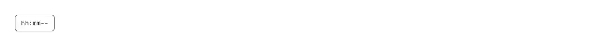

A time field you type into, one segment at a time, that hands back a plain 24-hour clock string — "09:30", or "09:30:15" with seconds — and never a date and never a time zone. Reach for it wherever a form asks *when on the clock*: meeting, appointment and booking start and end times; opening hours and store hours; shift rosters, on-call rotations and availability editors; class and slot times; reminder, alarm and snooze times; quiet hours and do-not-disturb windows; the time half of a deadline or cut-off; the hour a scheduled report, digest email, backup or CI job runs; a maintenance window; delivery and pickup windows; check-in and check-out times; and the time part of a cron expression assembled in human terms. Common asks it answers: "time input", "time picker", "time field", "hh:mm input", "24 hour time input", "12 hour time picker", "AM PM input", "time picker without a library", "keyboard time entry", "shadcn time picker", "shadcn time input", "input type=time replacement", "styled native time input", "opening hours input", "quiet hours picker", "start and end time picker", "meeting time input", "react-time-picker alternative", "MUI TimePicker equivalent", "antd TimePicker equivalent", "rc-time-picker alternative". shadcn/ui ships nothing that touches the clock: fetching the source of all 63 items in its registry and grepping them turns up no type="time", no hourCycle, no hour12 and no AM/PM anywhere. Its calendar is a react-day-picker wrapper that answers which day, input is a bare text box you would still have to parse, and input-otp is a fixed-length code with no time meaning. It is also the "when" half of a pair: duration-input answers *how long* — 90m, 1h30m, and 1:30 meaning a minute and a half of elapsed time — while this one answers what the clock reads, where 1:30 is half past one. Alongside date-input (the day), month-picker (the month) and timezone-select (which zone a time is meant in), this is the one that types the time. The work is in the parts that are easy to get wrong. "Twelve-hour" is really two different clocks and the component implements all four: en-US writes midnight 12 AM and counts 12, 1, 2 (h12) while ja-JP writes it 午前0時 and counts 0, 1, 2 (h11), and en-GB and de-DE are on 00–23 (h23) with h24 counting to 24 — the cycle comes from Intl rather than from a hardcoded guess, so nobody is shown an hour their locale does not write. The displayed 12 falls to hour 0 before the PM half is added, which is the off-by-twelve that quietly turns a noon deadline into a midnight one. Segment order, the separators and the AM/PM wording all come from the locale too — ko-KR puts the day period before the hour, ja-JP writes 午前/午後 — while the digits themselves are rendered as ASCII, so an ar-EG reader is not shown Arabic-Indic numerals that the number keys cannot reproduce. Auto-advance is decided by range rather than by counting to two: 5 jumps straight to the minute on a 24-hour clock because no hour starts with 5, 1 waits for a possible 10–19, and a lone 0 is already midnight there while on a twelve-hour clock it waits for the digit that makes it 01–09. A pair that cannot exist starts a new number instead of dropping the keystroke. Arrow keys step a segment and wrap, and the hour stays in its half of the day the way the native control does — 11 AM steps to 12 AM, not to noon. minuteStep rounds an off-step minute toward the arrow, so 07 on a 15-minute step gives 15 going up and 00 going down instead of 22 and 52. min and max are flagged with aria-invalid without ever blocking typing, and a max earlier than min is read as a range that wraps past midnight — the HTML rule for time inputs — which is what lets quiet hours of 22:00–06:00 or a night shift be one field. Every segment is a spinbutton with its own label and range, the day period is announced by name rather than as a bare number, and Backspace, Home, End and the left/right arrows move around the field. Pasting accepts "14:30", "2:30 PM" and the locale's own wording. No Date object is ever constructed and no zone is ever applied, so the value is a wall-clock time that survives being stored and read back anywhere. Works controlled or uncontrolled, forwards a ref to the first segment so a shortcut can focus it, and mirrors the value into a hidden input for native form submit. Theme-aware via shadcn tokens; no dependencies — no date library, no time picker package.

Rendered on the shadcn default neutral palette with harness-generated props.
pnpm dlx shadcn@4.21.0 add @pulld/time-input
| licence | POINTER |
|---|---|
| primitive base | none |
| type | registry:ui |
| files | src/components/ui/time-input.tsx |
| npm deps pulled | none beyond the pre-installed peer set |
| registry deps | — |
| semantic / palette / hex | 8 / 0 / 0 |
| writes shared ui/ | yes — can overwrite the project’s own primitives |